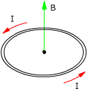

|
Campo en el centro de una espira circular
| I |
Intensidad de corriente en la espira |
| r |
Vector de posición. Coincide con el radio y apunta hacia
el centro de la espira |
r |
Módulo del vector de posición (Radio de la espira) |
| ur |
Vector unitario correspondiente al de posición |
| uI |
Vector unitario con la dirección y sentido de la corriente |
Los vectores r, uI se pueden
tomar en cualquier punto de la es-pira
Dirección y sentido del campo (Rápido)
|
Cortando la espira por un plano
perpendicu-lar que pase por un diametro veremos la sección
de dos conductores que tienen i-gual intensidad pero en sentidos
contra-rios.
Se traza la linea
de fuerza de cada conduc-tor que pasa por el centro de la
espira. El campo será tangente a la línea y tendrá
el sentido de esta |
Dirección y sentido del campo (Rapidísimo)
 |
Se coloca un sacacorchos perpendicular al plano de
la espira
Haciéndole girar en el sentido de la co-rriente avanzará
en el sentido del campo magnético |
|